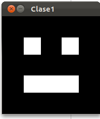

Processing
http://bit.ly/1vmg8ir
Creat per Isaac Muro

Obtenir processing
- Descarregar Processing
- El teniu tots?

Univers Processing


Interactivitat JS
Principis pedagògics
- Creativitat
- Cooperació entre alumnes
- Presa de decisions
- Auto-aprenentatge
Proces pedagògic
- Aprenentatge basat en projectes
- InfoMates
- #Programalaplaza
InfoMates
link#Programalaplaza
linkcomencem!!!
2. Primer programa
void setup(){
size(200, 100);
}
void draw(){
background(0);
text("Hola Mon", 20,20);
}
Eix Y Invertit
- L'eix X d'esquerra a dreta...
- L'eix Y de dalt cap abaix...
size
La funció size determina l'amplada i l'altura de l'sketch
size(200, 100);
// 200 és l'amplada de l'sketch en pixels
// 100 és l'altura de l'sketch en pixels
background
La funció background determina el color o la imatge de fons de l'sketch. Els colors estàn en format RGB.
background(145, 13, 86);
// 145 és la quantitat de vermell (Red)
// 13 és la quantitat de verd (Green)
// 86 és la quantitat de blau (Blue)
Figures
- Rect
- Stroke/noStroke
- Fill/noFill
- Point
- Line
- Ellipse

rect
La funció rect dibuixa un rectangle a la pantalla.
rect(30, 20, 55, 55);
// 30 és la posició X on comença a dibuixar-se el rectangle.
// 20 és la posició Y on comença a dibuixar-se el rectangle.
// 55 és l'ampla del rectangle.
// 55 és l'altura del rectangle.

stroke
La funció stroke determina el color del contorn de les figures que es dibuixen a continuació. Els colors estàn en format RGB.
stroke(204, 102, 0);
// 204 és la quantitat de vermell (Red)
// 102 és la quantitat de verd (Green)
// 0 és la quantitat de blau (Blue)
nostroke
La funció noStroke deshabilita el color del contorn de les figures.
noStroke();

fill
La funció fill determina el color del de l'interior de les figures que es dibuixen a continuació sense pintar el contorn. Els colors estàn en format RGB.
fill(204, 102, 0);
// 204 és la quantitat de vermell (Red)
// 102 és la quantitat de verd (Green)
// 0 és la quantitat de blau (Blue)
nofill
La funció noFill deshabilita el color de l'interior de les figures.
noFill();

Petit repte: Cara somrient
Intenteu reproduir la cara que teniu a continuació amb codi Processing. Només amb les instruccions que hem explicat, en teniu suficient.
point
La funció point dibuixa un punt en les coordenades que li indiquis.
point(30, 20);
point(85, 20);
point(85, 75);
point(30, 75);
// Els dos paràmetres són la coordenada X i Y del punt.
line
La funció line dibuixa una línia entre els dos punts indicats per les coordenades.
line(30, 20, 85, 75);
// 30 és la coordenada X del primer punt
// 20 és la coordenada Y del primer punt
// 85 és la coordenada X del segon punt
// 75 és la coordenada Y del segon punt
// La línia es dibuixa entre el primer i el segon punt

triangle
La funció triangle dibuixa un triangle utilitzant els 3 punts que se li passan com a paràmetres (6 nombres).
triangle(30, 75, 58, 20, 86, 75);
// 30 és la coordenada X del primer punt
// 75 és la coordenada Y del primer punt
// 58 és la coordenada X del segon punt
// 20 és la coordenada Y del segon punt
// 86 és la coordenada X del tercer punt
// 75 és la coordenada Y del tercer punt

ellipse
La funció ellipse dibuixa una elipse utilitzant un punt com a centre, i dos valors com a radi en X i radi en Y.
ellipse(56, 46, 55, 55);
// 56 és la coordenada X del radi
// 46 és la coordenada Y del radi
// 55 és l'amplada del radi en X.
// 55 és l'altura del radi en Y.
strokeweight
La funció strokeWeight canvia l'amplada del contorn de les figures.
strokeWeight(1); // Default
line(20, 20, 80, 20);
strokeWeight(4); // Thicker
line(20, 40, 80, 40);
strokeWeight(10); // Beastly
line(20, 70, 80, 70);
arc
La funció arc dibuixa un arc, que es pot entendre com una secció d'una elipse.
arc(50, 55, 50, 50, 0, HALF_PI);
// 50 és la coordenada X del radi
// 55 és la coordenada Y del radi
// 50 és l'amplada del radi en X.
// 50 és l'altura del radi en Y.
// 0 és on comença l'arc en graus.
// HALF_PI és on acaba l'arc en graus.
noFill();
arc(50, 55, 60, 60, HALF_PI, PI);
arc(50, 55, 70, 70, PI, PI+QUARTER_PI);
arc(50, 55, 80, 80, PI+QUARTER_PI, TWO_PI);
Interactivitat amb l'usuari
setup
La funció setup s'executa només una vegada quant el programa comença. Es solen iniciar els paràmetres d'inicialització en aquesta funció. Aquesta funció és opcional. Només pot haver-hi una funció setup en tot el programa.
void setup(){
size(200, 100);
}
draw
La funció draw es crida justament després de la funció size. És una funció que es crida continuament en forma de bucle.
void setup(){
size(200, 100);
}
void draw(){
line (23,34,5,5);
}
background I
La funció background es sol utilitzar de dues formes. Definir-la en la funció setup. I per tant només es dibuixarà una vegada.
void setup(){
size(100, 50);
// Definim el fons blau
background(0,0,255);
}
void draw(){
// Dibuixem una circumferencia negre
fill(0);
ellipse (mouseX, mouseY, 15, 15);
}
background II
La segona forma d'utilitzar la funció background és a la funció draw. En aquest cas, la funció background s'executarà indefinidament.
void setup(){
size(100, 50);
}
void draw(){
// Definim el fons
background(#3F3F3F);
// Dibuixem una circumferencia negre
fill(0);
ellipse (mouseX, mouseY, 15, 15);
}
mouseX
La variable mouseX conté la coordenada X d'on es troba el mouse.
void draw()
{
background(#3F3F3F);
line(mouseX, 20, mouseX, 40);
}
mouseY
La variable mouseY conté la coordenada Y d'on es troba el mouse.
void draw()
{
background(#3F3F3F);
line(20, mouseY, 40, mouseY);
}
mousePressed
La funció mousePressed es crida quan s'apreta el botó del mouse.
int value = 0;
void draw() {
fill(value);
rect(25, 25, 50, 50);
}
void mousePressed() {
value = 255;
}
mouseReleased
La funció mouseReleased es crida quan es deixa d'apretar el botó del mouse.
int value = 0;
void draw() {
fill(value);
rect(25, 25, 50, 50);
}
void mousePressed() {
value = 255;
}
void mouseReleased() {
value = 0;
}
La funció print s'utilitza per imprimir informació a l'àrea de la consola, que és el rectangle negre que es troba a sota de l'entorn de Processing.
int value = 32;
void setup() {
// Imprimim un text
print("Hola");
// Imprimim una variable
print(value);
// Imprimim un literal
print(43);
}
println
La funció println s'utilitza per imprimir informació a l'àrea de la consola, però afegint un salt de línea al final.
int value = 32;
void setup() {
// Imprimim un text
println("Hola");
// Imprimim una variable
println(value);
// Imprimim un literal
println(43);
}
Imprimir la posició del mouse
Com imprimirieu la posició del mouse cada cop que canvia de posició?
draw(){
println(mouseX + ":" + mouseY);
}
random I
La funció random genera un nombre aleatori entre 0 i el nombre que se li passa com a paràmetre.
void draw(){
background(#3F3F3F);
// Genera un nombre entre 0 i 50
int value = random(50);
line (10, 10, value, 50);
}
random II
La funció random també pot tenir dos paràmetres. El nombre generat estarà entre aquests dos valors.
void draw(){
background(#3F3F3F);
// Genera un nombre entre 50 i 100
int value = random(50, 100);
line (10, 10, value, 50);
}
random III
La funció random es pot utilitzar per canviar els colors, per exemple.
void draw(){
int value = random(15,30);
// Dibuixem una circumferencia amb colors random
fill(random(255),random(255),random(255));
ellipse (mouseX, mouseY, value, value);
}
noise
La funció noise és la funció que genera una seqüència de nombres aleatoris, però de forma més natural i harmònica.
random vs noise
| Noise | Random |
pmouseX, pmouseY
Les variables pmouseX i pmouseY s'utilitzen per saber el valor de les variables mouseX, mouseY anterior.
void draw(){
line (mouseX, mouseY, pmouseX, pmouseY);
}
keyPressed
La funció keyPressed es crida quan s'apreta una tecla.
int value = 0;
void draw(){
background(100);
fill (value);
rect(30, 20, 55, 55);
}
void keyPressed() {
if (key == 'a' || key == 'A') {
value = 255;
} else {
value = 0;
}
}
reptes!
Proposta de reptes depenent del nivell en programació.

Repte 1: Personatge expressant un sentiment
Descripció
Crear un personatge expresant un sentiment. Podeu dibuixar-vos a vosaltres.Coneixements
RectStroke/noStroke
Fill/noFill
Point
Line
Ellipse
Arc
Exemples
Repte 2: Cara animada
Descripció
Animeu el personatge que heu creat afegint-li interactivitat amb l'usuari.Coneixements
mouseXmouseY
mousePressed
mouseReleased
Random
Noise
Exemples
Repte 3: Tauler de dibuix
Descripció
Crea un tauler de dibuix on l'usuari pugui expressar la serva creativitat.Coneixements
El que hem utilitzat anteriormentCondicions
Exemples
Repte 4: Comportament Emergent
Descripció
Definim el comportament individual, però quan el fem creixer colectivament, apareix un nou comportament.Coneixements
El que hem utilitzat anteriormentBucles
Classes